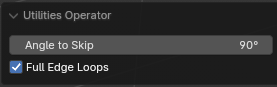
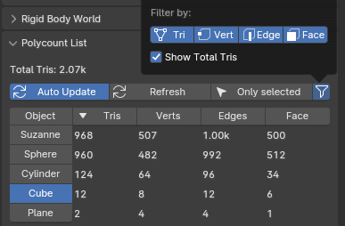
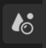

Toolkit Panel
The Toolkit tab in the 3D Viewport sidebar (N) collects the add-on's object, edit-mode and game-art tools in one place.
Toolkit Panel
Sidebar › ToolkitPreference: Object Toolkit
The icon row at the top of the panel chooses which sections are shown: Object (Retopology, Object/Edit Toolkit and Quick Bake Name), Modifiers, LOD, CAD Decimate and Polycount List. Each section only appears when its feature is enabled. Shift-click an icon to show several sections at once. The Prefs button in the panel header opens the add-on preferences.
In Edit Mode the Object section shows the Edit Toolkit instead. The Retopology box has Toggle/Exit Retopology, New Retopology at Active, and Reset Theme to Backup if the theme got stuck.
Modifiers section
Offset UV and Triplanar UV (add/remove), Sharp from UV Islands, and quick Lattice, FFD 3× and FFD 4× deformers.
Object Toolkit
Object Mode| Button | What it does | Shortcut |
|---|---|---|
| Combine | Joins the selected objects and keeps normals, UV maps and transforms intact | |
| Separate | Separates the object by loose parts, material and more | |
| Apply Modifiers | Instant Apply All Modifiers: applies even very heavy stacks (like Decimate) in a fraction of the usual time when the result is fairly low-poly. Deduplicates materials. Keep a backup before using it. | Alt C |
| Freeze Scale | Smart Apply Scale: applies scale and adjusts modifier values (bevel width, solidify thickness…) so the result looks the same. Also in Object › Apply. | |
| Snap to Floor | See Snap to Floor | Alt 3 |
| Clear Normals | Clears custom split normals | |
| Fast Mirror | See Fast Mirror | Alt X |
| Select Similar | See Select Similar | |
| Parent Used Objects | Parents every object used by the selection's modifiers (boolean cutters, mirror/array objects, Geometry Nodes inputs) so they move with it. Options: all modifiers or booleans only, and recursive. | |
| Duplicate Linked: Mesh / Modifiers | Linked duplicate of the mesh, or a duplicate that shares the modifier stack and then moves | Shift Alt D |
| Boolean | See Booleans | Ctrl Numpad |

Edit Toolkit
Edit ModeSelection and modeling operations grouped by selection mode, inspired by 3ds Max's Edit Poly panel:
- Selection: grow/shrink, loop, ring, boundary, inner region, by angle, similar, checker deselect, non-manifold, n-gons.
- Edit Vertices / Edges / Polygons: remove, split, extrude, weld, chamfer/bevel, connect, inset, fill, limited dissolve, bridge, flip.
- Edit Geometry: Preserve UVs toggle, merge center, collapse, separate, rip, slice plane, cut, subdivide, un-subdivide, hide/unhide. On Blender 5.0+ with LoopTools: make planar, circle and relax.
- Cylinder: Cylinder from Edge, and Subdivide / Un-Subdivide Cylinder, which keep UVs. The direction follows the active edge. Subdivide Cylinder needs the EdgeFlow add-on.
- Vertex Color: set the color of the selection.
- The Extrude menu also gets Offset Extrude Edge.


CAD Decimate
Toolkit › CAD DecimatePreference: CAD Decimate
Decimates huge scenes that would normally crash Blender (or ZBrush) by running out of memory. It exports the objects, then imports and decimates them one by one.
Tested on a scene with 330 million triangles and thousands of objects, decimated to a reasonable count. Fast Mode was off and Quality set to Low.
Options
- Percent or Tris Count (High quality): decimate by a ratio or to a target triangle count. Medium/Low use a merge amount instead.
- Quality: High uses the Decimate modifier (slowest, best result). Medium welds by distance (much faster, may merge nearby geometry, loses UVs). Low welds by connected (about 2× faster than Medium, never merges separate parts, loses UVs).
- Fast Mode: faster, but uses more memory and can crash on very heavy input. Turn it off for the safest run.
- Preserve UVs, Export Selected Only, Delete Files After Import, Auto Clear Garbage Data, export path and format.

Auto LOD
Toolkit › LODPreference: Auto LOD
Creates a chain of decimated LODs from the selected meshes in one click.
- Amount of LODs (default 3) and LOD Difference (% reduction per level, default 45%).
- Suffix (default
_LOD), numbered for each level. - Options: parent LODs to the source, keep X symmetry, transfer face/edge normals, add Weighted Normals, unlock normals on all LODs.
Polycount List
Toolkit › Polycount · Scene PropertiesPreference: Polycount List
A live list of all objects with their triangle count, sortable and filterable. It stays fast with tens of millions of triangles, and it can show how long each object's modifiers take to evaluate, which helps find slow modifiers.
- Auto Update with an adjustable update rate. Turn it off and use Refresh for very large scenes.
- Filter by collection (with child collections), selected only, enabled collections only, and collection instances.
- Display: total triangles, object type, rounded numbers, max list length, draw time.


Quick Bake Name
Toolkit › Quick Bake NamePreference: Quick Bake Name
Names high- and low-poly pairs for baking in Substance Painter or Marmoset Toolbag.
- With two objects selected, the higher-poly one gets
_highand the other_low. - With more objects, the active one gets
_lowand the rest_high,_high.001,_high.002… Bakers then treat them as one high-poly. - Buttons: Quick Bake Name, Rename, Set _high, Set _low.
- Each high/low group is listed with select, Show and Hide buttons. Ctrl-click deselects.
Quick Export
Ctrl EObject ModePreference: Quick Export
Exports the selected meshes next to the saved .blend file, named after it. The default format is OBJ; FBX, glTF, USD and Alembic are also available.
If the active collection's name contains high or low, the file goes into a Bake folder as <blend name>_high or _low. This makes iterating on bakes quick: fix, Ctrl E, rebake.
.blend file first. Quick Export needs its folder.Material Utils
Alt MPreference: Material Utils
Alt M opens a material list to assign materials quickly, in Object and Edit Mode. Choose Compact List or Big Preview Icons in the settings. Also adds:
- Remove All Object Materials in the material context menu and in Object › Clean Up.
- In the Material Properties (Object Mode): Assign the active material to the selected objects, Select / Deselect objects using it, and Clear Unused slots on the selected objects.